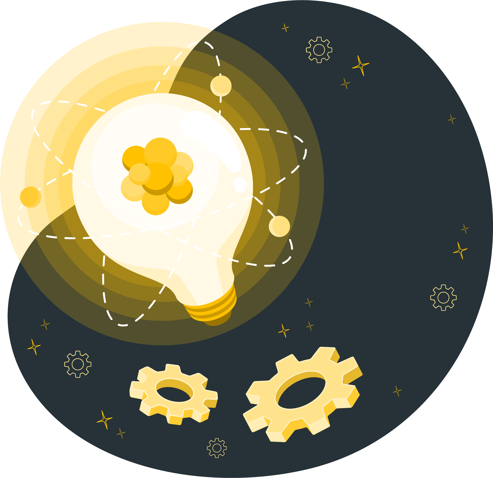

Community Guide¶
Overview¶
The ESDSWG Community Guide is a collection of best-practices and resources for running successful open source communities around NASA ACCESS and other NASA open source software projects. While the Open Source Guide covers the ins and outs of setting up the systems that manage the code, documentation, and user input of a software project - this guide is designed to help you take those systems and build a real community around them.
Relationship to other policies¶
Our goals are aligned with those of NASA's Science Mission Directorate policy SPD-41a: Scientific Information Policy for the Science Mission Directorate that provides guidance on the open sharing of publications, data, and software created in the pursuit of scientific knowledge. We aim to extend this guidance to the domain of science software. Those policy changes that apply to science software are as follows:
- Research data and software are shared at the time of publication or the end of the funding award.
- Mission data are released as soon as possible, and unrestricted mission software is developed openly.
Policy specific to earth science in this domain:
Community Guide Authors¶
This guide is the collective effort of many individuals during multiple ESDSWG periods. See the Community Development Best Practices meeting notes on the EarthData wiki for a full list of contributors.
Values¶
Transparency¶
Projects should be transparent to the community.
Accessibility¶
Project assets should be accessible to everyone in the community.
Inclusivity¶
Projects should welcome participation by and collaboration with diverse people and organizations. Editor's note: These values are based on NASA's Open Source Science Initiative principles
Community Flywheel (Getting Started)¶
Open source projects present an amazing opportunity for a community to come together around a common goal. Getting that initial effort off the ground can often feel like a monumental task. Think of your project as a flywheel1. In order to get the flywheel moving, you need to put a significant amount of initial effort to get it moving. This effort could be writing a bunch of blog posts and how-tos to promote the project, creating walkthrough videos to get people started, talking to people at conferences, and providing support and resources to help get people involved. As the flywheel spins, it becomes easier to maintain momentum and keep the community humming along.
Open Source is a Superpower¶
When a project is open source, almost everything is "built in public." Potential contributors can easily work with the software and see how the community functions before making a commitment. Often, these projects will have documentation and other non-code tasks for community members to manage. These tasks can be an inroad to larger contributions and involvement in the community. Working in public also provides transparency and a high-level of trust for everyone involved. This trust and credibility is converted to momentum and the flywheel keeps spinning.
Make Everyone Feel Welcome¶
It's important to create a welcoming and supportive environment for newcomers. The goal is for everyone to feel valued as members of the community.
Here are some tips for creating a welcoming environment for newcomers:
- Be friendly and approachable. Reach out to new contributors and learn about their interests. Get to know what they'd like to contribute to and work to find areas of the project they could support.
- Be inclusive. Encourage participation from new members and listen to their ideas--even if they are not experienced or well-known.
- Be patient. Remember that everyone has to start somewhere, and that it can take time for new contributors to learn the ropes and become comfortable with the project and its community.
- Be clear and concise. Make sure that your communication is clear and easy to understand, and avoid using jargon or complex technical language that may be confusing.
- Be helpful. Provide resources and support to help new contributors get started, such as links to relevant documentation, tutorials, or examples. Be available to answer questions and provide guidance.
Be Responsive¶
It's important that the community feel active to newcomers and that current members see a "pace" and flow to the communication and responsiveness of the project maintainers. Being responsive and engaged with the community while avoiding burning out can sometimes seem overwhelming, but there are steps you can take to manage this responsibility without the stress:
- Set clear boundaries and expectations for your involvement in the community. Establish regular communication channels where you can provide updates and address concerns from the community.
- Delegate tasks and responsibilities to other members of the community, and to provide support and resources to help them take on these roles.
- Prioritize self-care and avoid overcommitting yourself. Be realistic about the time and energy you have available to devote to the project and community.
- Seek support and advice from others, such as other project maintainers or members of the community, to help you manage your workload and avoid burnout.
Give More Than You Take¶
For a community to grow, the founding members of the community will likely have to give more than they take. This giving can come in the form of advice and insight, documentation and how-tos, screencasts, and social events. Consider the value that a member gets from the organization and how that might encourage them to contribute. Only after you've given substantially to the community should you ask your members or contributors to do something. Not only will this make the community feel like they're getting real value from the group (make it worth their time) but it will also inspire genuine and meaningful contributions.
Examples of Giving¶
- Screencast showing the basics of submitting a pull request to the project
- Community leaders writing and publishing documentation and best-practices as guideposts for members
- Responding to questions and issues raised by community members in a timely and helpful manner
- Mentoring new contributors and helping them to become familiar with the project and its goals
- Recognizing contributions, big and small
- Hosting events or conferences related to the project
- Helping to build and maintain partnerships with other organizations or projects aligned with community goals
- Actively seeking out and addressing any potential barriers to participation, such as unclear documentation or a lack of resources
- Using Twitter and other social media platforms to talk about how to use the software/system/project in your own project
Handoff/Keeping the Flywheel Spinning¶
- Communicate openly and transparently with the community. Keep community members informed about any changes or developments related to the project, and get their feedback and input.
- Establish clear roles and responsibilities for project leadership and management. This can help to ensure that the project continues to move forward, even if the leadership team changes.
- Prioritize and focus on the most important goals and objectives of the project. This can help to keep the project on track, even as it grows and evolves.
- Encourage and support community participation. Make it easy for community members to contribute, and recognize and thank them for their contributions. This can help to maintain and even grow the community, which is essential for the long-term success of the project.
- Continuously assess and adapt to the changing needs and challenges of the project. Be willing to make changes and adjustments as needed.
Events and Rituals¶
Developer meetings¶
- Scope: Coordination of ongoing development activities
- Who should attend: Active contributors to the project, maintainers, project lead
- Timing: Depends on project size, ranges from daily to yearly
- Duration: Usually 1 hour
- Advice: Record progress through issues and pull requests
Community meetings¶
- Scope: Communication of development activities and events with the broader community, opportunity for community feedback
- Who should attend: Typically open to everyone
- Timing: Depends on project size, ranges from weekly to quarterly
- Duration: Usually 1 hour
- Advice:
- Require registration or have a waiting room
- Designate a leader for the community meeting
- Designate a separate note taker
- Share open notes after the meeting
Sprints/hackathons¶
- Scope: Synchronous collaboration on open source projects
- Who should attend: Defined by sprint organizers, could be focused on a core team, welcoming new contributors, or a combination for larger sprints
- Timing: Typically in conjunction with conferences, could be once per year or more frequently for larger projects
- Duration: Usually 1-2 days
- Advice:
- Specify goals for the sprint (e.g., targeted development towards roadmap items from core devs, onboarding new contributors)
- If onboarding new contributors, label ‘good first issues’ and ‘help wanted’ on GitHub issues
- If focusing on targeted technical development, communicate to conference leads that expertise is required
Presentations¶
- Scope: Ranges from general information about the project to in-depth overview of a specific technical aspect
- Timing: As frequently as community members have an appetite for presenting
- Format: Varies from informal videos, conference presentations, podcasts, or community presentations
Workshops¶
- Scope: In depth introduction to software tools
- Timing: Typically infrequently unless following a model such as Software Carpentry
- Duration: Typically 1-5 days
- Advice:
- The people leading the workshops do not need to be the same as the person coordinating the workshop
- Require applications and registration
- Solicit feedback from participants
Tutorials¶
- Scope: Succinct introduction to software
- Timing: As frequently as community members have an appetite for leading tutorials
- Duration: Typically 1 - 4 hr
- Advice:
- Clearly communicate expected prior experience and target audience
- Record videos where possible and share for future reference
References¶
- https://opensourceevents.github.io/
- https://mentored-sprints.netlify.app/
Leadership and Mentoring¶
Resolving Conflicts¶
- Contributor Covenant is a good place to start
Metrics¶
I fundamentally believe that pragmatic sustainable software is better built organically and collectively. I am curious what metrics might capture these more community-supportive behaviors.
Mathew Rocklin, DASK
The measurement of how successful your community is can be extremely difficult to quantify. There are a number of possible indicators but they, individually, may tell only part of the whole story. They are also, generally, open to interpretation.
Given this, it would seem prudent to measure as many of these indicators as possible and interpolate to get a true picture of community vibrancy, growth, engagement, etc.
None of the suggestions below should be used in isolation as a measure. Potential pitfalls of that practice may be itemized for each suggestion below.
How vibrant is your community?¶
vi·brant, adjective: full of energy and enthusiasm. Example: "a vibrant cosmopolitan city"
Enthusiasm in this context could be measured by, - Attendance at events and ceremonies - Volume of communications (Slack posts, mailing lists messages) - New feature requests
As these metrics are mapped over time a gauge of the change in vibrancy can be measured.
Evolution¶
Is your project changing with time or stagnant?
Commits¶
How much change exists within your project? DASK example
Performance¶
How well is your community responding to challenges?
Open vs Closed issues¶
Are you opening more issues than closing? Ideally, we would like to close more than we open.
Mean time to fix issues¶
How quickly are you resolving issues? We would like to improve on our fix rate.
Demographics¶
How is your community changing over time?
Joined / left project over time¶
We would like to grow our contribution community. We should also be cognizant of rapid increases or decreases in that community.
Diversity¶
Do we have represenation from a broad number of organizations? If one organization leaves, would that cause significant problems?
Percentage authors by organization¶
Is one organization particularly dominant? Ideally, we would like a spread between organizations to lessen the risk of sudden community shrinkage and encourage a diversity of ideas.
Pony and Elephant factors¶
The pony factor: the minimum number of developers performing 50% of the commits The elephant factor: the minimum number of organizations whose employees perform 50% of the commits
How do you tell if your community is growing/working¶
Blurb neeed here!
Size¶
Is your community growing, stagnant or shrinking?
Authors¶
The more contributors to your project the more your project is growing. However, it is not a sole indicator growth as it is not a primary indicator of usage.
Messsages¶
Much like authors, large amounts of talk about your project is an indicator of the size of your project. Two authors in regular conversation is a stronger indicator of growth than ten authors who haven't communicated for a year.
Documentation views¶
Downloads and clones of your project may suffer from 'bounce' problems. Ie. I downloaded this tool but I didn't use it. Measuring the views of the projects documentation a good metric for how many users are actively engaged in the use of your project.
Engagement¶
Is our project community serving the greater community?
Clones/downloads/forks¶
The more clones and downloads of a project the more value it seems to demonstrate. However, are those clones and downloads actually used? Are they being downloaded as part of an automated provisioning process rather than an explicit use?
No. of dependencies¶
A project being used by other projects is a measure of engagement. In much the same way that citations of a paper by other papers is an indication of value.
Github stars¶
A very obvious but nebulous and fickle measure of engagement. Is it of value? On it's own, no. But in conjunction with other metrics it may be useful. Metrics: Our download numbers are huge but our github stars are low Possible conclusion: This is an essential project to many but it is difficult to use
Benchmarks¶
Tools¶
To facilitate an open-source philosophy, technology can give you the agency to foster collaboration, innovation, and communication. When using and building tools, frameworks, and applications, consider how they augment, promote, and enhance the community.
We have several tools that we use for earth data products. We recommend using this common list of apps and plugins to help you with your projects.
Utilization¶
Platforms/GUIs¶
- Browser: The preferred browser for Earthdata products is Google Chrome .
- Git: An open-source version control system for development projects. We use this to set up projects in GitHub. To learn more about how it works go to Git .
- GitHub: A code repository and development platform that helps us build projects. To get started with GitHub go to GitHub Docs .
Command Prompt/Terminal¶
A text-based command line tool on your Mac, PC, or Linux systems. There are third-party command line tools that you can use or integrate with your IDE.
Integrated Development Environments (IDEs)¶
- Jupyter Notebook: A web-based development environment used for data science and computing. Visit Jupyter Notebook .
- PyCharm: A specialized IDE for Python programmers. Visit PyCharm .
- Visual Studio Code: A code editor for building and debugging apps. Visit Visual Studio Code .
Extensions/Plugins¶
You may need to enhance an experience or ability within a tool and there are vast options to partake.
Communication and Collaboration¶
There are a myriad of various tools to select for engaging with other community members and online participants.
Content Creation¶
When deciding which tool to use for documentation or creating content you need to determine the scale and the audience as well as the amount of effort to learn/use the application.
- Atlassian (Confluence, Trello)
- Docusaurus
- Google Workspace (Docs, Sheets, Slides, Forms)
- Jekyll
- MkDocs
- Notion
- Sphinx
Visualization¶
Various online options for storytelling and collaboration are at your disposal. You want to consider some popular and intuitive applications like the following:
- Figma
- Lucidchart
- Miro
- Mural

Community Gathering¶
As you know, communication is essential. Today’s world allows you to meet remotely. When choosing a community space, consider if the application promotes transparency, clarity, and inclusivity.
- Discord
- Discourse
- Gitter
- Slack
Video Conferencing¶
While the community grows you may feel that communicating and collaborating through video and immersive conferencing tools are best for what you are trying to work on together.
- Google Meet
- Microsoft Teams/Skype
- Zoom
What To Build With?¶
When choosing frameworks, APIs, environments, and libraries it helps to assess the scalability and viability of these tools in order to future-proof and maintain a product. Below is a list of what we are currently using.
Languages¶
- JavaScript
- Python
- Ruby
Frameworks/Libraries¶
- Rails
- React
Cloud Services¶
- AWS
- Azure
- Google Cloud
Testing¶
- JetBrains
- Selenium

Creating Tools¶
Innovation¶
Usage will constantly change with the industry standards, usage methodology, and technology and so will your approach to developing tools.
Scalability¶
Understanding the impact of the size and the roadmap for your project helps you successfully progress as you contribute to the community.
Accessibility¶
When interacting with other contributors we suggest that you use methods that help empower a cohesive and inclusive culture.
Future Proofing¶

As a developer community, we should not rely heavily on tools but allow them to help us where needed. That thought should be kept in mind when building solutions for others. We need access to what is necessary at the moment and be able to audit and consolidate later if need be. This practice keeps the community and its resources relevant and accountable.
The overall thing to consider when using or making tools is how they will help your development community grow, stay current, navigate opportunities, and promote contribution.
Templates¶
Issues and pull requests (PRs) help promote frequent contributions to your community. When setting up a system for issues and PRs, consider the type, content, and details that you would like others to contribute. Below are highlights of what we use for our templates in GitHub; however, if you choose to use other tools or repositories for your templates these best practices can apply as a blueprint for them as well.
Issues¶
Issues allow the community to help identify opportunities within your project whether it’s a bug, feature request, improvement, or question.
Type of Issues¶
There are several types of issues to consider when creating templates:
- Bug
- Feature
- General: Not a bug but an issue/problem.
- Custom: This is where you can cater to your community and set up additional issue types for example usage questions, third-party integration, etc.
Examples¶
Pull Requests¶
We encourage you to set up PR templates and guidelines for ease of use and consistency. When creating your template consider the workflow of submitting and approving a PR.
Things To Keep In Mind¶
-
Labels provide clarity of the PR’s status in the workflow. Below are status options to consider when you are building templates:
- Work in progress
- Ready for review
- In Review
- PR Feedback
-
Including in the body for the contributor to reference an issue or another PR/ticket is an added option to consider when building your template.
- Checklists help with the flow or highlighting important items/techniques that need to be included for a PR to be complete.
Resources¶
- Creating Issue Templates in GitHub
- Creating Pull Request Templates in GitHub
- Configuring Templates in GitHub
Resources¶
Success Stories¶
Pangeo¶
What is Pangeo?¶
Pangeo is first and foremost a community of people working collaboratively to develop open source software and infrastructure to enable open science, specifically focused on big data. The community has pioneered the use of large scale interactive cloud computing.
Origin story¶
In large part, Pangeo grew out of the Xarray and Dask projects. Xarray is a Python package for working with multidimensional arrays and datasets and Dask is a Python library for parallel computing. In 2016, a small group of developers and “super users” of these projects convened a workshop at Columbia University to discuss the idea of a community project for large scale geoscientific data analysis. Out of this meeting came the name and mission of the Pangeo Project. In the months and years since, the Pangeo community has grown to include a large number of scientists, software developers, and infrastructure providers.
Why has Pangeo been successful?¶
Pangeo’s success can be attributed to five themes:
- Clear mission and brand: Pangeo grew up to solve a specific set of problems. Its mission statement was simultaneously ambitious and inclusive, and its branding (name, logo, design concepts) facilitated its organic growth.
- Community focus: Pangeo’s approach to community engagement was intentionally open and collaborative. Technical conversations were held in the open on GitHub, in regular community meetings that were open to anyone. Over time, Pangeo added specific user support channels like discourse.pangeo.io to crowd source questions and solutions.
- Use case driven development: The Pangeo community was engaged in the project to solve specific challenges within active areas of geoscientific research. Pangeo helped turn pain points in big data workflows into technical problems that open source software projects could help solve. Here’s an example of the kind of interaction this approach fostered, leading to big steps forward for the open source project and motivating research project.
- Integrate and improve whenever possible: Rather than reflexively developing new projects to solve problems, the Pangeo approach was to first attempt to improve and integrate existing tools. This resulted in the incremental improvements across the scientific Python ecosystem and avoided further fragmentation of the community.
- Multifunctional development teams: The Pangeo community is made up of scientists, software engineers, and data/infrastructure providers. When working on complex problems that span multiple software libraries and pieces of infrastructure, having a multifunctional team engaged on a tough problem is key. This issue on the Distributed issue tracker exemplifies how productive engagements like this can be.